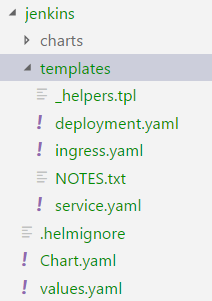

Kubernetes and its friends¶
Pre-requisite¶
- To manage the kubernetes stack you will need to install kubectl CLI.
Install kubernetes¶
Per the Kubernetes documentation, there are plenty of ways to install a kubernetes cluster. However, the one I used is not listed in this website but was produced by kubernetes.
Install with KOPS (Kubernetes OperationS)¶
# Configure AWS Region to use, the aws key and secret are in your ~/.kube folder
REGION=us-west-1
# Configure the cluster name and availability zones
AVAILABILITY_ZONES=us-west-1a,us-west-1c
CLUSTER_NAME=kube.platformdxc-test.com
# Configure the bucket s3 used to store the cluster information
BUCKET_NAME=lgil3-kubernetes
export KOPS_STATE_STORE=s3://$BUCKET_NAME
# Create the S3 bucket if it does not exist
if ! aws s3api list-buckets | grep $BUCKET_NAME; then
aws s3api create-bucket --bucket $BUCKET_NAME --region $REGION
aws s3api wait bucket-exists --bucket $BUCKET_NAME
aws s3api put-bucket-versioning --bucket $BUCKET_NAME --versioning-configuration Status=Enabled
fi
# Create your kubernetes cluster
kops create cluster $CLUSTER_NAME \
--zones $AVAILABILITY_ZONES \
--cloud aws \
--node-count 5 \
--node-size c5.4.xlarge \
--master-count 3 \
--master-size t2.large \
--master-zones $AVAILABILITY_ZONES \
--alsologtostderr \
--yes
Congratulation you have just deployed your first kubernetes cluster !!!!

Resize your cluster nodes¶
You can list your instance group in using:
kops get ig
// cspell:disable-next-line -- disables checking till the end of the next line.
NAME ROLE MACHINETYPE MIN MAX ZONES
master-us-west-1a-1 Master t2.large 1 1 us-west-1a
master-us-west-1a-2 Master t2.large 1 1 us-west-1a
master-us-west-1c-1 Master t2.large 1 1 us-west-1c
nodes Node t2.2xlarge 3 9 us-west-1a,us-west-1c
Then you can edit your instance groups in using :
kops edit ig <ig name> --state s3://lgil3-kubernetes
apiVersion: kops/v1alpha2
kind: InstanceGroup
metadata:
creationTimestamp: 2018-06-07T13:45:18Z
labels:
kops.k8s.io/cluster: kube.platformdxc-test.com
name: nodes
spec:
image: kope.io/k8s-1.9-debian-jessie-amd64-hvm-ebs-2018-03-11
machineType: t2.2xlarge
maxSize: 9
minSize: 3
nodeLabels:
kops.k8s.io/instancegroup: nodes
role: Node
subnets:
- us-west-1a
- us-west-1c
change the minSize to 4 and apply the change :
kops update cluster kube.platformdxc-test.com --yes --state s3://lgil3-kubernetes
kops rolling-update cluster kube.platformdxc-test.com --state=s3://lgil3-kubernetes --yes
Amazing you have just scaled your cluster

Deploy a container with kubernetes¶
Create a manifest file¶
Create a manifest file with the following content:
kind: Namespace
apiVersion: v1
metadata:
name: jenkins-test
labels:
name: jenkins-test
---
apiVersion: apps/v1beta2
kind: Deployment
metadata:
name: jenkins
labels:
app: jenkins
namespace: jenkins-test
spec:
replicas: 1
selector:
matchLabels:
app: jenkins
template:
metadata:
labels:
app: jenkins
spec:
containers:
- name: jenkins
image: "jenkins/jenkins"
imagePullPolicy: Always
ports:
- name: http
containerPort: 8080
protocol: TCP
- name: jnlp
containerPort: 50000
protocol: TCP
volumeMounts:
- mountPath: /var/jenkins_home
name: jenkins-home
volumes:
- name: jenkins-home
emptyDir: {}
Deploy the manifest¶
Download the manifest file and execute the following command. The manifest will create the jenkins-test namespace and will deploy a jenkins pod.
kubectl create -f manifest.yaml
You can check that your jenkins pod was created in using :
kubectl get pods -n jenkins-test
if you need more details about your pod you can execute :
kubectl describe pods <pod name>-n jenkins-test
Deploy a container with Helm¶
You can create a jenkins helm chart with :
helm create jenkins
The comment will create a new repository with the following structure :

- The template folder contains a basic chart definition.
- The values file will contain the chart parameters
Edit the values.yaml file :
- change the parameter
repositoryto jenkins/jenkins - change the parameter
tagto 2.130
Edit the file templates/deployment.yaml :
- Change the line 28
containerPortto 8080 - Remove the following lines :
livenessProbe:
httpGet:
path: /
port: http
readinessProbe:
httpGet:
path: /
port: http
Helm lint¶
Helm comes with a linter to check your chart syntax, go into the jenkins helm folder and execute :
helm lint .
Deploy your chart¶
From your chart folder
helm install --name jenkins --namespace jenkins-test --values values.yaml .
Access your jenkins server in using the following commands :
export POD_NAME=$(kubectl get pods --namespace jenkins-test -l "app=jenkins,release=jenkins" -o jsonpath="{.items[0].metadata.name}")
kubectl port-forward $POD_NAME 8080:8080 -n jenkins-test
Navigate to http://127.0.0.1:8080

Deploy a container with Spinnaker¶
Install Spinnaker¶
You can deploy Spinnaker in using Halyard. Halyard is a CLI used to generate a configuration file which will be applied against your cloud provider. In my use case i used the kubernetes cluster previously created. However you can target another cloud provider such as EC2,GCE ....
Create a Spinnaker pipeline template¶
You can configure Spinnaker from the UI or from code.
A Spinnaker pipeline is composed of a template and a configuration which is very powerful as you can reuse a template pipeline over different project.

As the template pipeline is shared across several projects if you modify it once it will update all the associated pipelines.
Template sample¶
elk-template.yml
schema: "1"
id: demo-template
metadata:
name: demo app template
description: Kubernetes v2 deploy with a Github trigger template for a demo app
scopes:
- global
variables:
- name: gitBranch
type: string
description: Git branch to trigger on
- name: k8App
type: string
description: Application this resource belongs to. Affects where the resource is accessible in the UI
- name: k8Cluster
type: string
description: Cluster this resource belongs to. Logical grouping for the UI.
- name: repository
type: string
description: The repository name
configuration:
concurrentExecutions:
limitConcurrent: true
parallel: false
expectedArtifacts:
- id: k8ArtifactId
defaultArtifact:
type: custom
matchArtifact:
kind: github
type: github/file
name: deploy/manifest.yaml
useDefaultArtifact: false
usePriorArtifact: false
usePriorExecution: false
triggers:
- type: git
branch: "{{ gitBranch }}"
source: github
project: lgil3
slug: "{{ repository }}"
enabled: true
expectedArtifactIds:
- k8ArtifactId
stages:
- id: deployK8Manifest
type: deployManifest
name: Deploy K8s manifest
config:
cloudProvider: kubernetes
account: sandbox-manifest
source: artifact
manifestArtifactId: k8ArtifactId
manifestArtifactAccount: lgil3
relationships:
loadBalancers: []
securityGroups: []
clusters: []
moniker:
app: "{{ k8App }}"
cluster: "{{ k8Cluster }}"
Template configuration¶
elk-config.yaml
schema: "1"
pipeline:
application: elasticsearch
name: Deploy ELK suite
template:
source: https://github.dxc.com/raw/lgil3/kube-spinnaker-template/master/elk-template.yml?token=AAASjpLFBNTtMwyqjMS4RZYONXDmwD6uks5bPzPfwA%3D%3D
variables:
repository: chart-elk
gitBranch: master
k8App: elasticsearch
k8Cluster: elasticsearch-cluster
configuration:
inherit: ['expectedArtifacts','concurrentExecutions', 'triggers', 'parameters']
We can see in the pipeline/template/source the reference to the source template in github.
This pipeline is configure to follow the master branch of the repository chart-elk, it will be triggered each time the file deploy/manifest.yml is modified.
Deploy your pipeline to Spinnaker¶
You can now push your pipeline to Spinnaker in using the roer cli.
-
Create the spinnaker application
roer --as $(token) app create elasticsearch createApp.yml -
Create your deployment pipeline
roer --as $(token) pipeline save elk-config.yaml
References¶
- https://kubernetes.io/docs/reference/kubectl/cheatsheet/
- https://github.com/spinnaker/dcd-spec/blob/master/PIPELINE_TEMPLATES.md
- https://github.com/spinnaker/roer